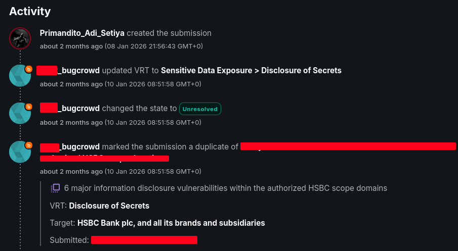
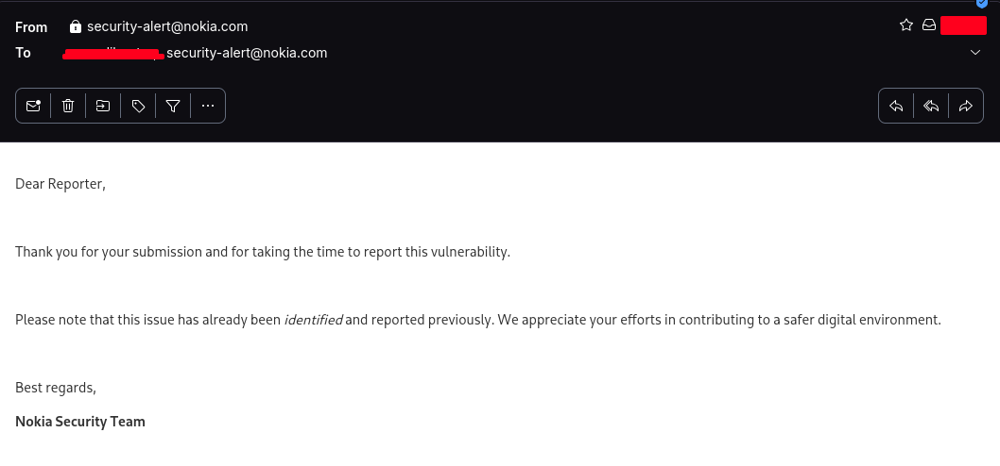

Sensitive Data Exposure > Disclosure of Secrets
HSBC (Bugcrowd)
Duplicate
Valid
Successfully identified the exposure of sensitive credentials within the application scope. The security team triaged the report as technically valid.
[+] VIEW VALIDATION LOG

Screenshot: Triage acknowledgement and status assignment.
Information Disclosure
Nokia
Duplicate
Valid
Detected an information leakage vulnerability revealing internal system configurations. The finding was acknowledged by the security team as valid research, demonstrating effective reconnaissance on the target infrastructure.
[+] VIEW VALIDATION LOG

Screenshot: Validated duplicate report activity.